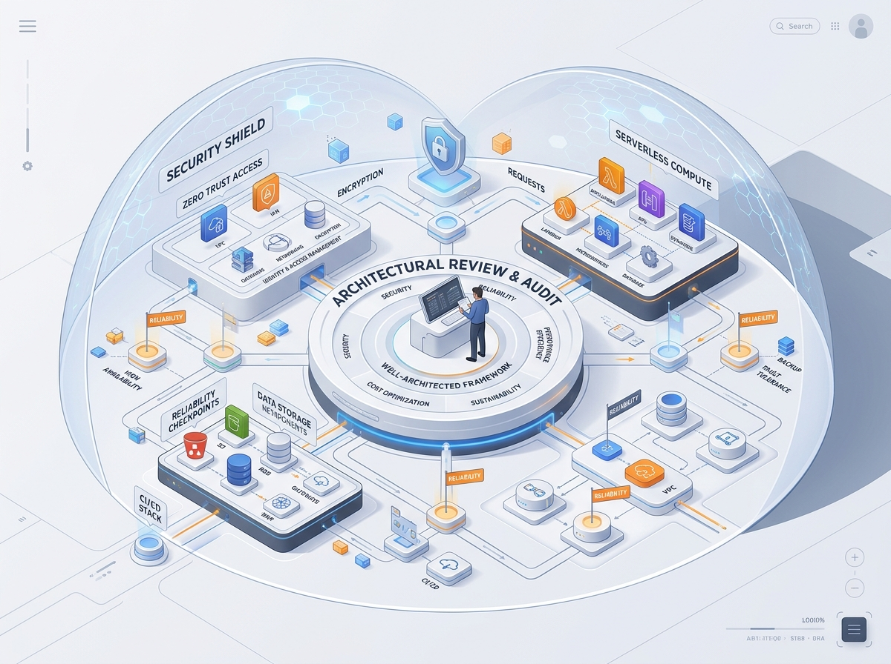

Well-Architected Architecture Review
Deep-dive evaluation of your production workloads benchmarked against recognized industry frameworks. We uncover hidden security exposures, single points of failure, scalability bottlenecks, and cost leaks before they impact your customers.

The Five Review Pillars
1. Security Posture
Data-at-rest and in-transit encryption, IAM privilege segregation, perimeter defense (WAF/DDoS), security group hygiene, and secret management audits.
2. Reliability & Disaster Recovery
Fault tolerance across availability zones, distributed backup validation, automated recovery mechanisms, and RTO/RPO threshold verifications.
3. Performance Efficiency
Selecting optimal compute and storage architectures, database indexing strategies, CDN edge caching, and auto-scaling response latencies.
4. Cost Optimization & FinOps
Eliminating zombie compute instances, implementing appropriate pricing models (Reserved, Savings Plans), and establishing tag-based departmental attribution.
5. Operational Excellence
Declarative release practices, infrastructure telemetry, automated alerting with actionable runbooks, and post-incident root-cause analysis processes.